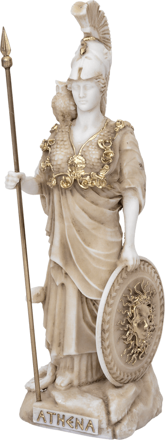
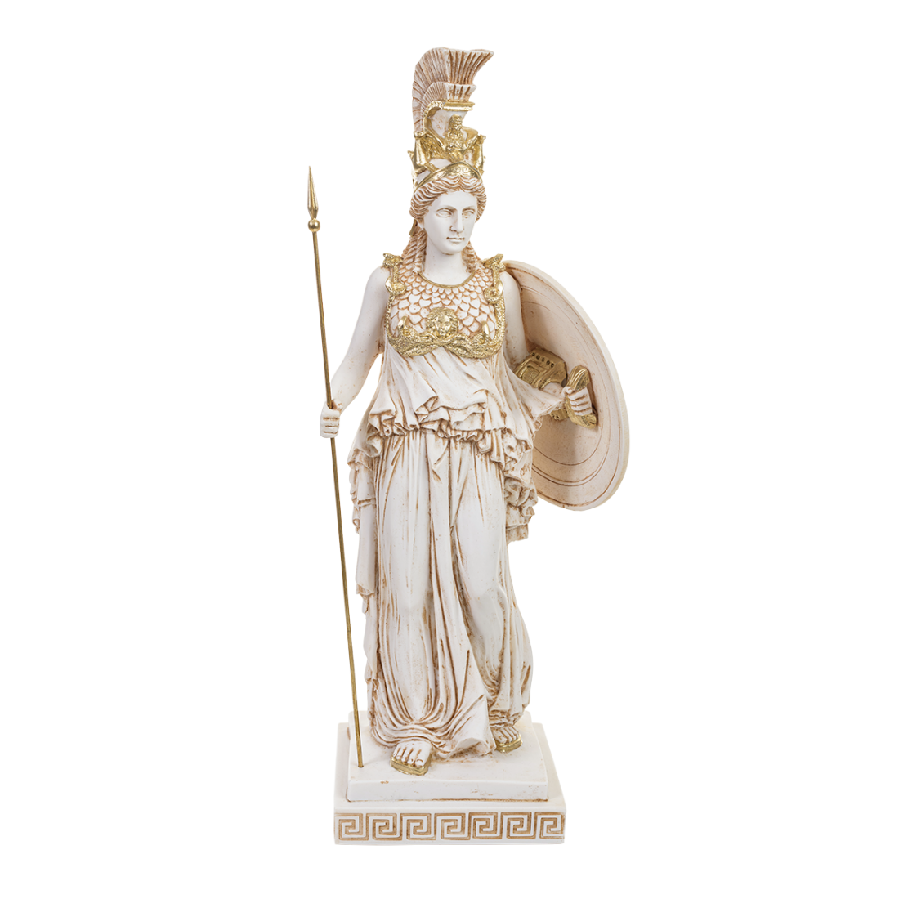

.png)

Nós do santuário servimos à Deusa Athena. Os deuses muitas vezes desprezam os humanos. Os deuses cósmicos do universo tendem a ser mesquinhos e egoístas. Eles desejam que os humanos os adorem e os sirvam por pura vaidade deles. E por seres eles desejam destruir a raça humana alegando que a falta de temor do poder dos deuses tem deixados os humanos ambiciosos demais e cheios de si. Em sua divina perspectiva a vê os humanos de forma diferente. Os seres humanos no olhar dela apesar de seus defeitos, tem uma capacidade de amar. E isso move o coração da deusa Athena a querer enfrentar o poder dos deuses para garantir que os humanos possam permanecer vivendo no planeta Terra e evoluindo até se tornarem puros como deveriam ser.
Quando algum deus deseja atacar a raça humana para exercer seu juízo, a deusa Athena se encarna em uma jovem humana para inspirar seus fieis guerreiros. Estes guerreiros são conhecidos como cavaleiros. Em tempos de guerra são eles que combaterão os exércitos dos deuses que querem destruir os humanos. Apesar destes deuses não terem apreço pelos humanos, por questão de ego eles gostam quando os humanos oferecem devoção. E quando os humanos possuem uma força de combate excomunal, os deuses os aceitam-nos guerreiros em seus exércitos assim como a deusa Athena recebe guerreiros para lutar em seu exército.